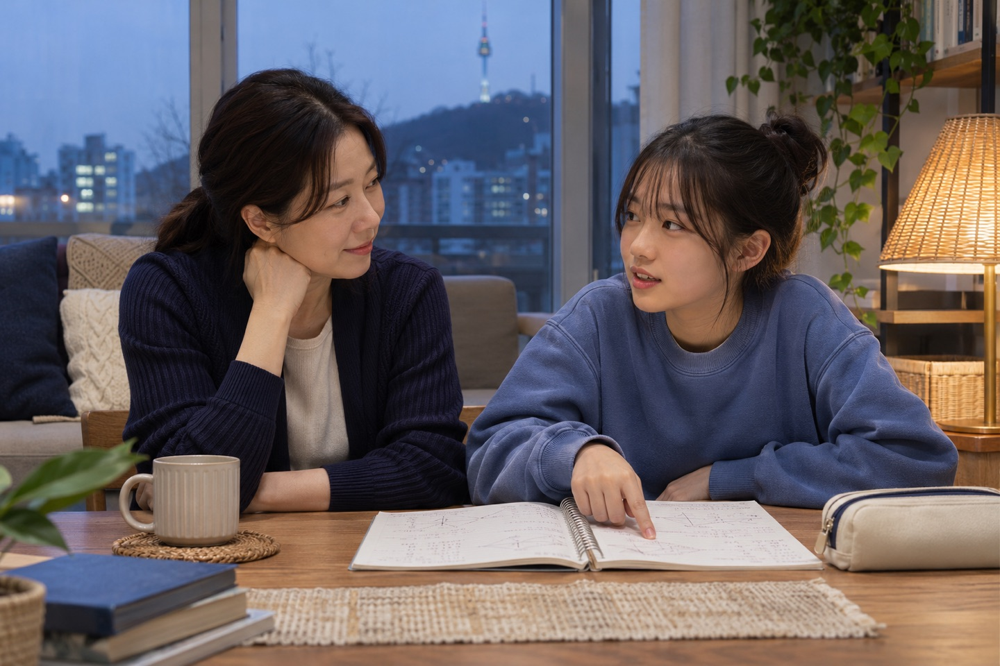
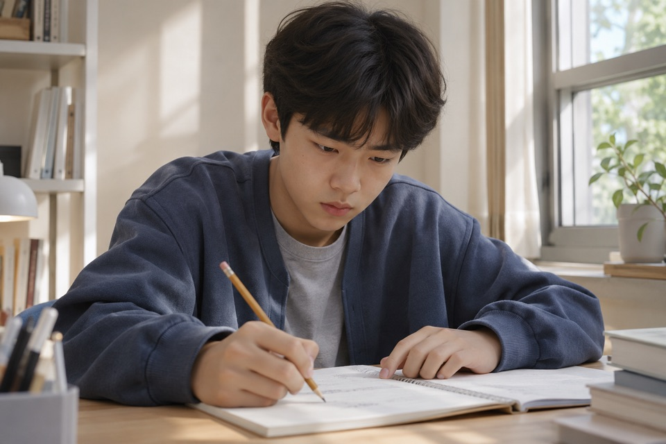

상담의 관점이 담긴 교육칼럼
아이가 답을 멈췄을 때, 어느 부분을 다시 공부하면 좋을지 함께 찾아보는 방법을 소개합니다.
‘알겠다’던 공부, 다음날 한 번 설명해 보자
백주경 교육학 박사의 학습 상담
아이의 공부에서 반복해서 막히는 순간을 살펴보고, 집에서 시도할 학습 방법을 함께 정합니다.
학생과 학부모를 위한 학습 상담

검사를 알아보고 계신 분께
교육채널 오름은 뇌파 측정과 결과 해석 상담을 안내합니다. 신청 전 측정 방식과 상담 범위, 대상 연령을 확인할 수 있습니다.
이 안내는 교육 상담을 위한 정보입니다. 질환 진단이나 치료에 관한 판단은 의료기관에 문의해 주세요.
아이가 답을 멈췄을 때, 어느 부분을 다시 공부하면 좋을지 함께 찾아보는 방법을 소개합니다.
‘알겠다’던 공부, 다음날 한 번 설명해 보자학생인지 성인인지, 학습 상담과 뇌기능검사 중 어떤 안내가 필요한지 간단히 알려주세요. 첫 문의에서 자세한 건강 정보나 검사 기록을 보내실 필요는 없습니다.
검사 상품 안내에 표시된 가격을 확인하고, 예약 가능 일정과 장소, 해석 상담 포함 범위는 카카오톡으로 문의해 주세요.
반복해서 막히는 공부 상황이나 복습 습관을 이야기할 수 있습니다. 검사 없이 학습 상담을 신청할 수 있는지와 구체적인 진행 방식은 문의해 주세요.